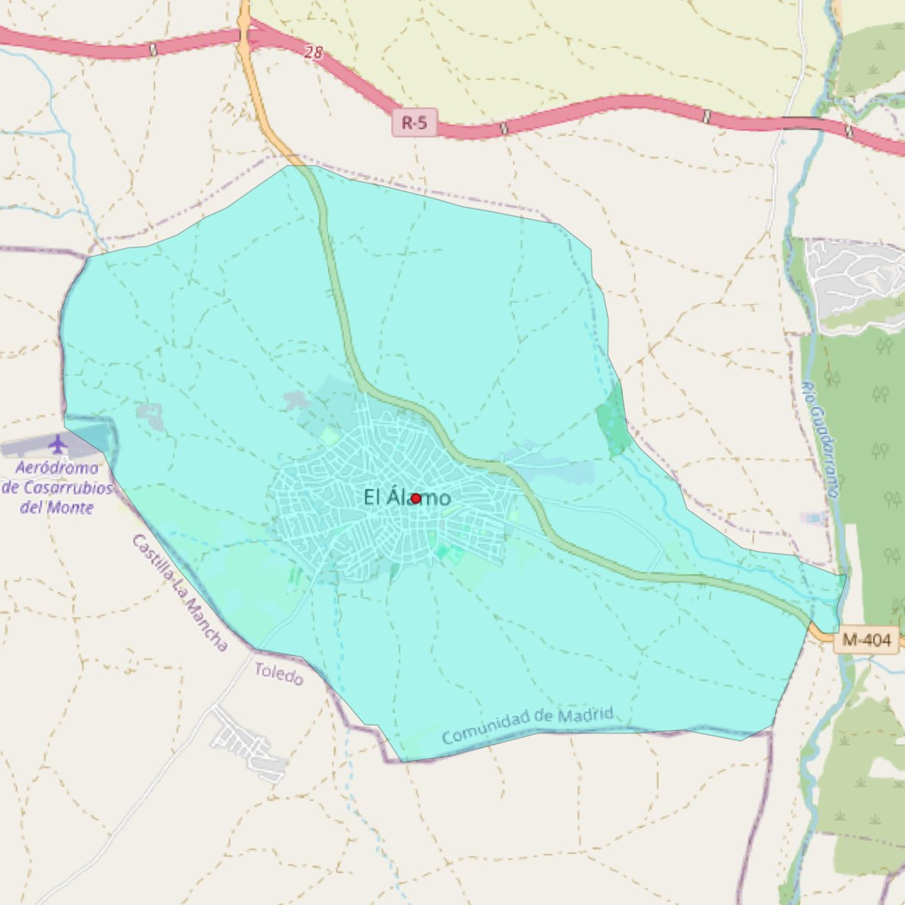

El Álamo · Arciprestazgo de Navalcarnero · Diócesis de Getafe

De cada 100 habitantes, 19 tienen menos de 18 años, 18 tienen 65 o más y 21 han nacido en otro país.
| Parroquia | Arciprestazgo | Diócesis | |
|---|---|---|---|
| Habitantes (2025) | 10.590 | 71.407 | 1.729.840 |
| Habitantes por km² | 482 | 181 | 751 |
| Edad media (2024) | 41,0 años | 40,0 años | 42,3 años |
| Menores de 18 (2024) | 19,4 % | 20,9 % | 18,2 % |
| 65 o más (2025) | 18,2 % | 15,3 % | 18,4 % |
| Índice de envejecimiento (2025) | 119 | 92 | 127 |
| Nacidos en otro país (2025) | 21,5 % | 19,7 % | 20,3 % |
| Renta por persona (2024) | 13.300 € | 14.700 € | 16.000 € |
| Personas por hogar (2024) | 2,92 | 2,90 | 2,80 |
| Hogares de una persona (2024) | 19,6 % | 20,6 % | 21,0 % |
| Estudios superiores (2024) | 30,1 % | 32,0 % | 32,4 % |
| Paro (2024) | 10,2 % | 9,6 % | 9,1 % |
No hay en esta web ningún desarrollo urbanístico previsto en el territorio de la parroquia.